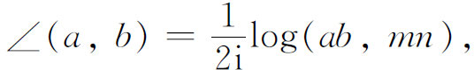
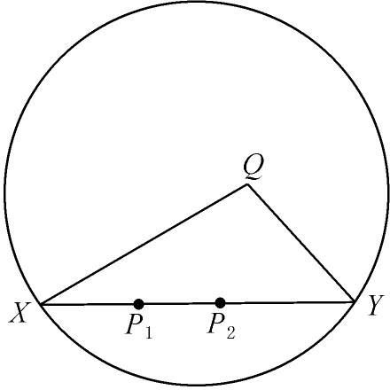
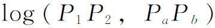
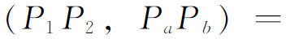
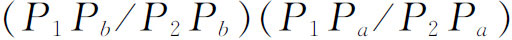
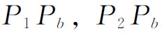
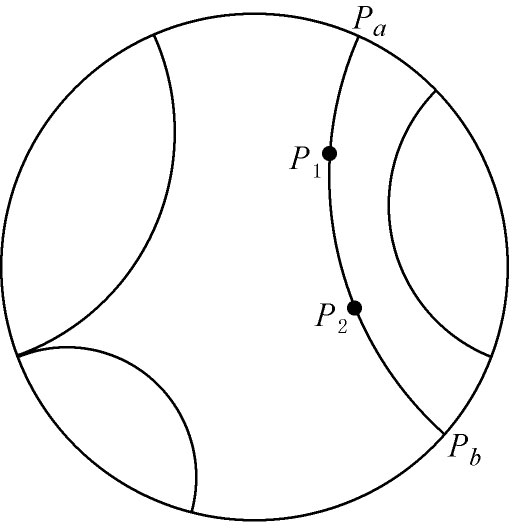

4．模型与相容性问题
早在19世纪70年代几种基本的非欧几里得几何，如双曲几何与两种椭圆几何，已经为人引进并大力进行研究。但为使这些几何成为数学的合法分支，还得回答一个基本问题，即它们是否相容。如果有人证明在这些几何中矛盾是固有的，则仍可证明高斯、罗巴切夫斯基、约翰·波尔约、黎曼和克莱因等人的工作将是毫无意义的。
说实在的，二维二重椭圆几何相容性的证明是现成有的，可能黎曼已经认识到这个事实，虽然他没有明确说出。贝尔特拉米曾经指出(14)黎曼正的常曲率二维几何可在球面上实现。这个模型使得二维二重椭圆几何相容性的证明成为可能。这种几何的公理（此时尚未明确提出）与定理完全可以应用到球面上的几何，只要把二重椭圆几何的直线解释为球面上的大圆。若在二重椭圆几何内有矛盾的定理，则在球面的几何内也必然有矛盾的定理。现因球是欧几里得几何的一部分，故若欧几里得几何是相容的，则二重椭圆几何也必然如此。对19世纪70年代的数学家来说，欧几里得几何的相容性几乎是没有问题的，因为除去如高斯、约翰·波尔约、罗巴切夫斯基以及黎曼等几个人的观点外，欧几里得几何是物质世界必然的几何，而在物质世界上会有矛盾的性质那是不可能想象的。然而，特别是根据后来的发展，重要的一点是认识到二重椭圆几何相容性的证明依赖于欧几里得几何的相容性。
证明二重椭圆几何相容性的方法不能用于单重椭圆几何或用于双曲几何。单重几何的半球面模型不能在三维欧几里得几何中实现，虽然它能在四维欧几里得几何中实现。如果愿意相信后者的相容性，则可以接受单重椭圆几何的相容性。然而，尽管n维几何已经由格拉斯曼（Hermann Günther Grassmann）、黎曼以及其他一些人考虑过，19世纪70年代的任何数学家是否愿意肯定四维欧几里得几何的相容性却是很值得怀疑的。
双曲几何的相容性是不能根据任何这种理由来建立的。贝尔特拉米曾给出过伪球面解释，伪球面是欧几里得几何空间的一个曲面，但这只作为双曲几何有限区域的模型，所以不能用来建立全部几何的相容性。罗巴切夫斯基与约翰·波尔约曾考虑过这个问题（第36章第8节），但未能解决它。事实上，约翰·波尔约虽自豪地发表了他的非欧几里得几何，但有证据他怀疑它的相容性，因为在他死后发现他的文章中还继续试图证明欧几里得平行公理。
双曲几何与单重椭圆几何的相容性是用新的模型建立的。双曲几何模型是贝尔特拉米(15)给出的。然而，用于这个模型的距离函数则归功于克莱因，并且经常有人认为这个模型也是他给出的。我们来考虑二维情况。
在欧几里得平面内（它是射影平面的一部分）选取一个实二次曲线，可取为圆（图38.4）。根据双曲几何的这种表示法，几何的点是圆的内点，几何的直线是圆的弦，比如说弦XY（但不包含X与Y）。若取任一点Q不在XY上，则能找到任何条数的直线通过Q而不与XY相交。这些直线的两条，如QX和QY，把过Q的直线分成两类，一些直线与XY相交，一些直线则不与XY相交。换言之，双曲几何的平行公理为圆内的直线（弦）与点所满足。再者两直线a与b的夹角大小是

其中m与n是从角顶点到圆所作的共轭虚切线，（ab，mn）是a，b，m与n四直线的交比。常数1/2i保证直角的度量为π/2。两点间的距离由公式（8）定义，即d＝clog（PP′，XY），c一般取作k/2。根据这一公式，当P或P′趋于X或Y时，距离PP′变成无穷大，于是由于这种距离，弦是双曲几何的无限直线。

图38.4
这样，以距离与角的大小的射影定义，圆内部的点、弦、角与其他图形就满足双曲几何的公理。于是双曲几何的定理也可应用于圆内部的图形。在这个模型中，双曲几何的公理和定理实际就是欧几里得几何中对于一些特殊图形与概念（例如，由双曲几何方式定义的距离）的论断。因为所说这些公理与定理能应用于当作属于欧几里得几何的图形与概念，则所有双曲几何的论断都是欧几里得几何的定理。于是，如果在双曲几何中有矛盾的话，这个矛盾将是欧几里得几何之内的矛盾；因而如果欧几里得几何是相容的，则双曲几何也必须是相容的。这样，双曲几何的相容性归结为欧几里得几何的相容性。
双曲几何相容的事实蕴涵着欧几里得平行公理与其他欧几里得公理无关。假若不然，即如果欧几里得平行公理可以从其他公理导出，它也将是双曲几何的一个定理，因为除去平行公理以外，欧几里得几何的其他公理和双曲几何的公理是相同的。但是这个定理将与双曲几何的平行公理相矛盾，从而双曲几何将不会相容。二维单重椭圆几何的相容性也像双曲几何一样可用同样方式证明，因为这种椭圆几何也可以在射影平面中实现，且有距离的射影定义。
庞加莱（Henri Poincaré）(16)联系自守函数的研究，独立地给出另外一个模型，也建立了双曲几何的相容性。双曲平面几何的这个庞加莱模型能够表达的一种形式(17)是把圆取作绝对形（图38.5）。在绝对形之中几何的直线是与绝对形成正交的圆弧和通过绝对形中心的直线。任一线段P1P2的长度由

给出，其中

，Pa与Pb是过P1与P2的圆弧与绝对形的交点，
等长度都是弦。模型中两相交“直线”间的角就是两弧间的通常欧几里得角。在绝对形点处相切的圆弧是平行“直线”。因为在这个模型中双曲几何的公理和定理也是欧几里得几何的特殊定理，以上关于贝尔特拉米模型的论证，也可在此应用以建立双曲几何的相容性。以上类似的高维模型也是正确的。
图38.5